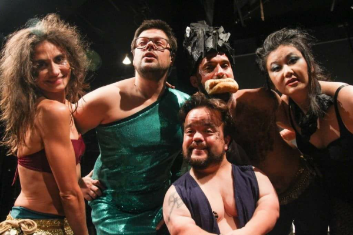
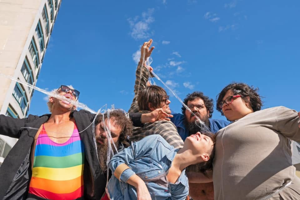
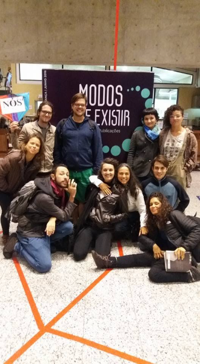

De 2015 a 2017. Escrevia artigos, selecionava e editava o material recebido, buscava autores e colaboradores, fazia entrevistas, elaborava projetos de captação.
Sesc Santo Amaro, São Paulo. Participação como coordenador do iDança.
Abril de 2017. No espetáculo de dança de Ronie Rodrigues e Gladis Tridapalli, da Cia Entretantas Conexão em Dança. Primeira temporada em Curitiba, no teatro da Cia dos Palhaços. Integra trilogia, ao lado de Cachaça sem rótulo e Pátrya. Remontagem em 2020.

Criação coletiva da Selvática Ações Artísticas, com Gabriel Machado, Jussara Belchior, Mari Paula, Princesa Ricardo Marinelli, Ricardo Nolasco e Rubia Romani. Edital Coletivos em Residência, Fundo Municipal de Cultura de Curitiba. Mostra Solar, na Casa Hoffmann, Curitiba — única temporada. Teve também uma versão de rua.

